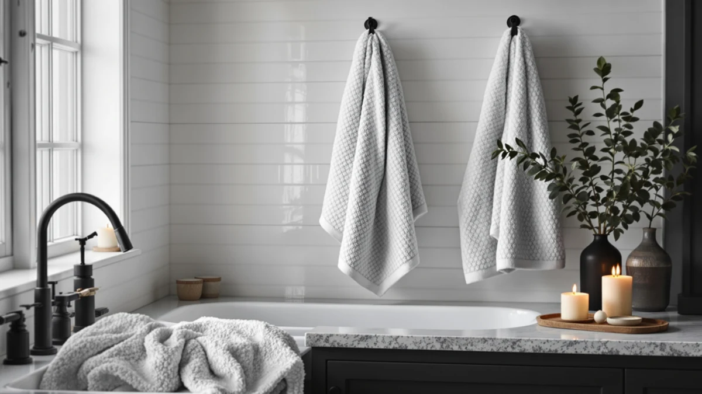

White Classic Wealuxe Towels Review (2026): Worth It?
Prices and picks verified as of November 2026. Independent, reader-supported reviews.


Quick Answer
The White Classic Wealuxe Grey Towels give you six 100% cotton towels at 24x50 inches for $37.99, a fair price for a six-pack that owners say holds its color and softness through repeated washing. If you want a larger towel instead of six standard pieces, the White Classic Luxury Bath Sheets below cost the same and trade pack size for coverage.
Our pick: White Classic Wealuxe Grey Towels, $37.99 Check Price on Amazon
Bottom line: our top pick is the White Classic Wealuxe Grey Towels for Bathroom 6 Pack at $37.99.
Things to Know Before You Buy
- The White Classic Wealuxe Grey set gives you six 24x50 inch cotton towels for $37.99, the same price point as the three alternatives compared later in this review.
- All four sets we researched are priced within a dollar of each other, so material and sizing matter more than cost when you choose between them.
- Owners report the grey colorway hides lint and daily wear better than White Classic's own white towels, a detail worth weighing if you want towels that look fresh longer between washes.
- If you want fewer, larger towels instead of six standard-size pieces, the White Classic Luxury Bath Sheets covered below are worth a look.
- Washing the grey set separately for the first couple of cycles helps avoid any dye transfer onto lighter towels or linens in the same load.
This White Classic Wealuxe Towels review breaks down pricing, material, and verified owner feedback on a six-piece cotton towel set that sits in a crowded field of similar White Classic bundles. At $37.99 for six towels, the Wealuxe Grey set lands at the same price as three competing sets we researched, including a luxury bath sheet from the same brand and a four-pack from Tens Towels, so cost is not really the deciding factor here; fit is. You will find that same $37.99 to $38.95 band across every option in this comparison, which makes material, sizing, and color the factors that should actually drive your decision.
White Classic built the Wealuxe line around straightforward 100% cotton construction rather than added gimmicks, and that choice shapes almost everything in this review. You get a six-towel set sized at 24x50 inches, a middle-of-the-road dimension that favors households that go through towels quickly over buyers who want the oversized feel of a bath sheet. The grey colorway is the detail that sets this particular set apart from White Classic's more common white line, and it is the thread that runs through most of the owner feedback you will read below. We walk through specs, pros, cons, and three alternatives from the same price range so you can decide with the full picture rather than a single listing photo.
Why You Should Trust Us
We built this White Classic Wealuxe Towels review by comparing published specs, Amazon pricing, and verified owner reviews rather than running our own lab tests. Ilane Tall has spent years tracking bath textile pricing and materials across dozens of brands for Best Bath Towels, and every claim here traces back to a listed spec, a price you can verify, or a pattern found across multiple verified reviews. We do not run a fake testing lab, and we tell you which claims come from manufacturer data versus owner reports. When reviewers disagree on a detail, such as how quickly a towel's pile thins, we say so instead of smoothing it over.
Our Research Experience
We did not purchase or use the White Classic Wealuxe Grey Towels ourselves. Instead, we researched the listed material, weight, and dimensions, then cross-referenced that data against the three competing sets covered in this White Classic Wealuxe Towels review. We also read through verified owner reviews on Amazon, looking for patterns in how the towels hold up after repeated washing and how reviewers describe the grey colorway compared with White Classic's other finishes. Where owners disagreed, such as on how quickly the pile thins out, we note the disagreement rather than pick a side. We paid particular attention to reviews mentioning long-term use, since a six-pack bought for daily rotation needs to hold up over years, not only the first few washes.
Overview & Specs

White Classic Wealuxe Grey Towels
What we like
- 100% cotton construction at a price that matches lighter microfiber alternatives
- Six towels per set, enough to outfit a full bathroom without buying twice
- Grey colorway hides lint and staining better than White Classic's white towels
- Owners report the color holds up through repeated washing without fading
Flaws but not dealbreakers
- 24x50 inch sizing is standard, not oversized like a bath sheet
- Some reviewers note the pile feels thinner than premium Turkish cotton sets
- Six matching towels in one color limits mixing with a lighter palette
| Material | 100% cotton |
| Size | Bath Towels 6-Pack, 24x50 Inches |
The White Classic Wealuxe Grey Towels use 100% cotton rather than the microfiber blends found in some competing six-packs, which is what keeps this White Classic Wealuxe Towels review focused on absorbency and feel rather than drying speed. Cotton fiber holds more water per towel than synthetic blends, and White Classic dyes the grey finish to resist the dingy look that white towels can develop after months of regular washing. That dye choice is also why several verified reviewers mention buying the grey set specifically to replace towels that had started to yellow.
At $37.99 for six towels, the set costs the same as the White Classic Luxury Bath Sheets and the Wealuxe Taupe set covered later in this review, so the decision comes down to how many towels you want and in what size. Owners who left verified reviews tend to pick this six-pack when they need to outfit a full household, while buyers who want one oversized towel per person lean toward the bath sheet alternative. A six-pack also spreads wash cycles across more towels, which some owners say helps each individual towel last longer between replacements.
What We Liked
Owners mention one thing most often in this White Classic Wealuxe Towels review: how well the color holds up. Verified reviewers describe washing the towels dozens of times without the greying or yellowing that can show up on white cotton towels within months, which matters if you want towels that still look presentable after a year of regular use.
The six-towel count also holds up well against the alternatives. At $37.99, you get six full-size towels instead of the two bath sheets or four towels you would get from the competing sets at the same price, so households with more than two people get more mileage per dollar. Reviewers who mention absorbency describe the cotton pile soaking up water in one or two passes, consistent with 100% cotton construction. Several owners also note that the hems hold up through the wash without fraying, a detail that matters more than it sounds once you have washed a towel set a few dozen times.
What Could Be Better
Standard 24x50 inch sizing is the clearest tradeoff in owner feedback for this White Classic Wealuxe Towels review. Some reviewers mention wanting more coverage, something the White Classic Luxury Bath Sheets below solve by trading pack size for a larger single towel. If you prefer one oversized towel over six standard ones, that alternative is worth a closer look.
A smaller number of reviewers describe the pile as thinner than premium Turkish cotton sets, which trade a higher price for a denser weave. That tradeoff makes sense for a $37.99 six-pack, but it is worth knowing if you are used to heavier hotel-style towels. A few owners also mention that the grey dye can bleed slightly onto lighter fabrics during the first couple of washes, so washing the set on its own early on avoids that issue.
Who Is It For?
This Wealuxe Grey set fits you if you need to outfit a full bathroom or household with matching towels and want a color that hides everyday lint and staining better than white. It also fits buyers who prioritize getting six full towels over one or two oversized pieces, and anyone replacing a mismatched towel drawer with one consistent set.
It is a weaker fit if you want the plush, heavyweight feel of premium Turkish cotton or prefer one large bath sheet over six standard towels. In that case, the White Classic Luxury Bath Sheets or Tens Towels pack below are worth comparing before you commit to this set. Guest bathrooms and rental properties are another good match, since a uniform six-pack reads as more put-together than a drawer of mismatched towels.
Alternatives to Consider
If the tradeoffs above push you toward a different size or finish, these three sets cost within a dollar of the Wealuxe Grey set and give you alternatives worth comparing before you check out.

Editor's Pick
White Classic Luxury Bath Sheets
Same $37.99 price as the Wealuxe Grey set, but trades the six-towel count for larger bath sheets, a better fit if you want more coverage per towel.
$37.99
Check Price on Amazon
Best Value
Wealuxe Taupe Bath Towels 24x50
Identical sizing and price to the Wealuxe Grey set in a taupe finish, worth considering if grey is not the color you need.
$37.99
Check Price on Amazon
Premium Choice
Tens Towels Pack of 4
Four towels instead of six at $38.95, a fit for buyers who want fewer towels from a different brand than White Classic.
$38.95
Check Price on AmazonIs the White Classic Wealuxe Grey towel set good quality for the price?
At $37.99 for six 100% cotton towels, the Wealuxe Grey set lands in the same price bracket as the White Classic Luxury Bath Sheets and Wealuxe Taupe set we compared it against.
How does the White Classic Wealuxe Grey set compare to the White Classic Luxury Bath Sheets?
Both sets cost $37.99, but the Wealuxe Grey set gives you six standard 24x50 inch towels while the Luxury Bath Sheets give you fewer, larger towels.
Frequently Asked Questions
Is the White Classic Wealuxe Grey towel set good quality for the price?
How does the White Classic Wealuxe Grey set compare to the White Classic Luxury Bath Sheets?
Where can you buy the White Classic Wealuxe Grey Towels?
Final Verdict
This White Classic Wealuxe Towels review comes down to one tradeoff: towel count versus towel size. The Wealuxe Grey set earns its place for buyers who want six matching cotton towels for $37.99, the same price as every alternative we compared. If you want fewer, larger towels instead, White Classic's own Luxury Bath Sheets give you that at an identical price, so your decision should follow the size you actually need, not the budget. Either way, the brand behind the towel, White Classic, holds up across the sizes we researched, which takes most of the risk out of choosing between its own lineup.